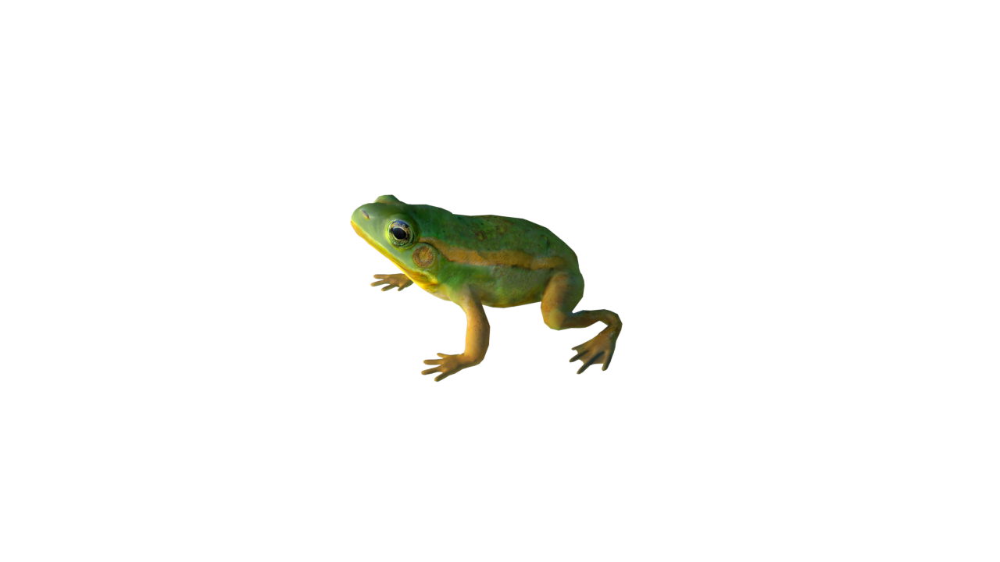
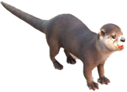
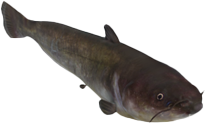
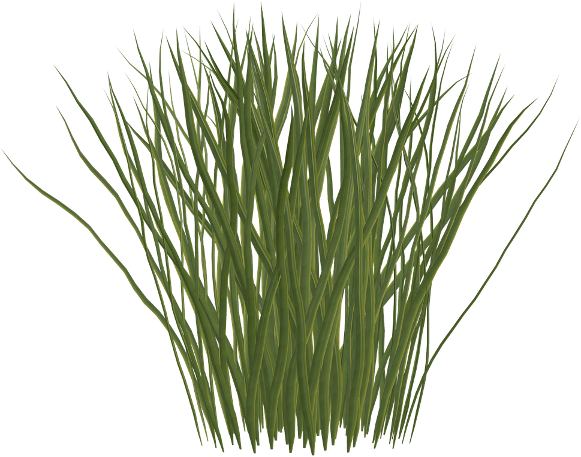
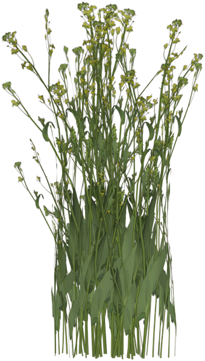
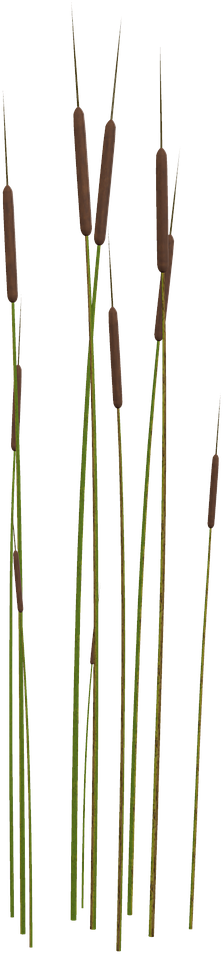
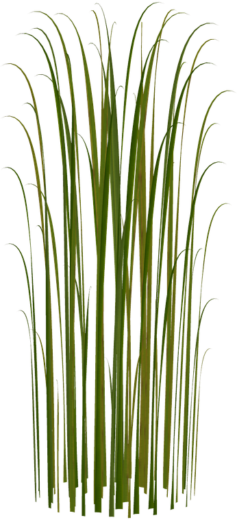

화성습지공원은
도시의 산업화로 오염된 시화호의
수질 개선과 자연 생태계의 회복을 위해
화성시에서 2002년에 만든
인공 습지예요.
화성시와 주민들의 노력으로 수생식물들이 먼저 수질 오염을 정화 시키는 갈대, 부들, 수련 등을 통해 수질 정화된 습지에 친환경 지표 생물들의 숫자가 늘어나면서 멸종 위기의 수달, 삵 등의 포유류까지 이곳 화성습지공원에 정착하게 되었답니다.

떠나간 동식물이 다시 돌아오기까지 많은 시간이 흘렀고 많은 사람들의 노력으로 다행히 지금은 회복이 되어 균형 잡힌 생태계의 모습을 갖추게 되었답니다.

A, B, C 길을 모두 걷고 나면 화성습지공원 대표 동식물 15종을 만나게 되고 비봉습지를 알리는 명예홍보위원으로의 자격도 부여받게 된답니다.




